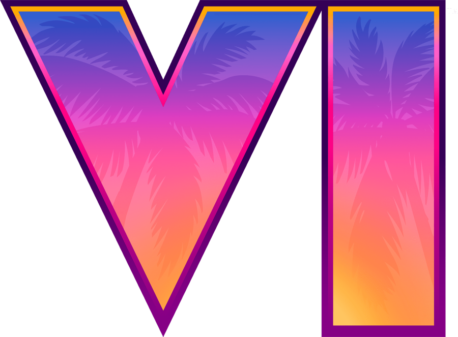

Tailandia, Indonesia y Corea del Sur vieron desplomarse sus monedas. El contagio sacudió al mundo.
Brasil soltó su moneda y el real se devaluó con fuerza en cuestión de semanas. En LatAm lo llamaron el "efecto samba".
Reventó la burbuja de internet: el Nasdaq llegó a caer casi 80% desde su máximo.
Quebró Lehman Brothers y el S&P 500 llegó a perder más de la mitad de su valor.
Chipre fue rescatado y sus bancos cerraron casi dos semanas, con límites para sacar dinero.
Bitcoin bajo $59,000, S&P 500 bajo 7,100 y oro bajo $3,550.